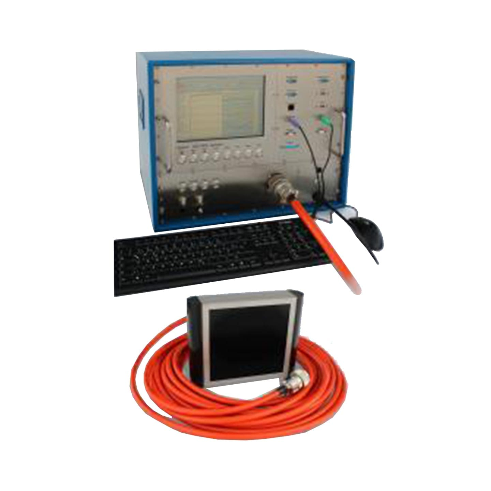
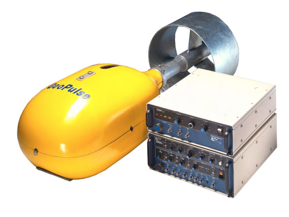
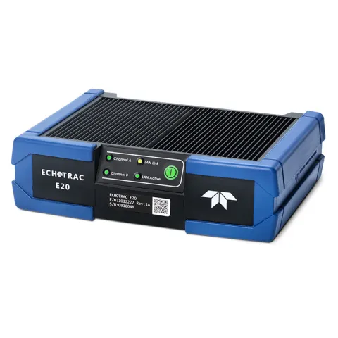
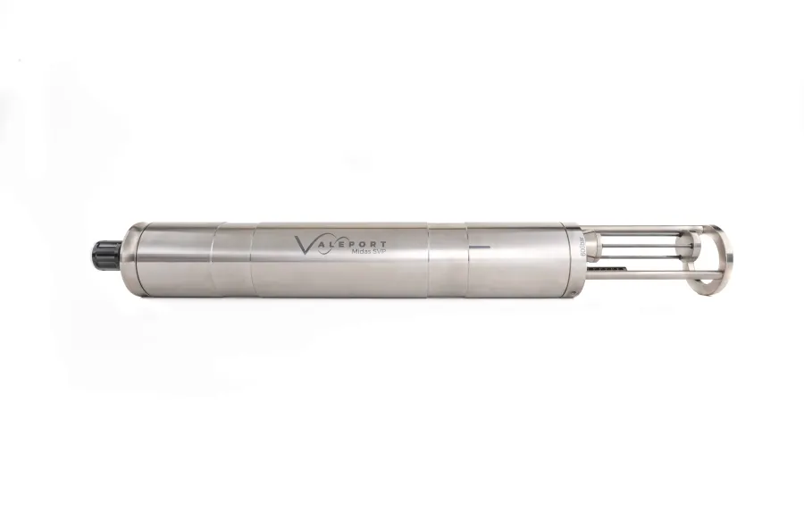
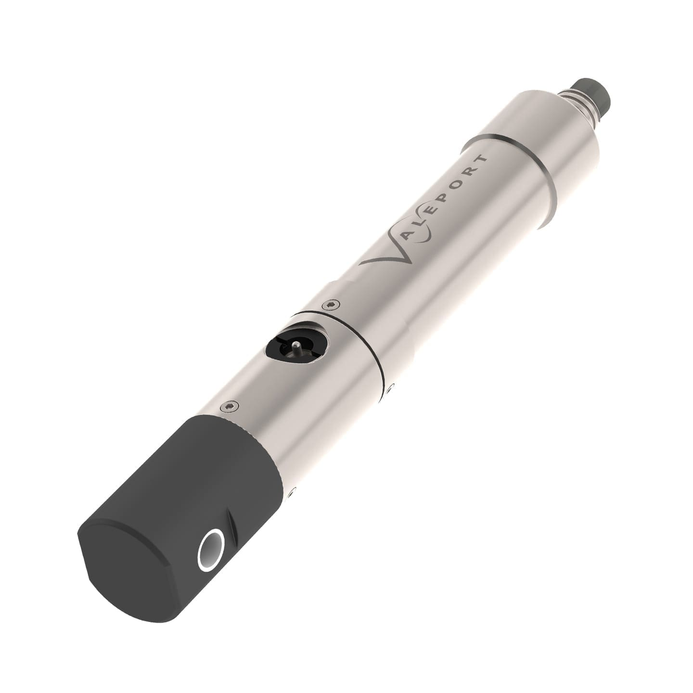

Hydrographic / Geophysical Equipment
Hydrographic and geophysical equipment prepared for acquisition and data control.
Bathymetry, seabed mapping, positioning, oceanographic measurement, seismic acquisition, and onboard QC systems support reliable marine survey delivery.
01 Equipment Approach
Hydrographic and geophysical systems
Survey instruments selected around acquisition method, water depth, positioning, and data control.
A compact overview of hydrographic and geophysical equipment used to support bathymetry, seabed mapping, seismic acquisition, positioning, oceanographic measurement, visual inspection, and onboard QC.
02 Equipment Showcase
Hydrographic / Geophysical Equipment

Innomar SES-2000 Compact Parametric SBP System

Kongsberg GeoAcoustics GeoPulse

MBES EM304
MBES Kongsberg EM2040P S/N 50038
Motion Sensor DMS-05
Odom Echotrac CV100
PS Logger
ROV Chasing M2 Pro Max
Sonardyne Beacon WSM6+ 1K MF Omni Assembly with Depth Sensor
TSS Meridian Gyro Compass
Teledyne Odom Echotrac E20 DC

Teledyne Odom Echotrac E20 ER
USBL Sonardyne Mini Ranger 2
.jpeg)
Under Water Camera Sea Spyder Nano (STR)
Valeport Midas SVX2

Valeport Monitor SVP
Valeport Tide Master
